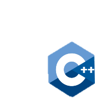
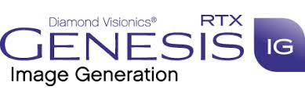
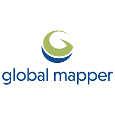
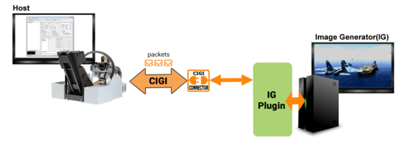
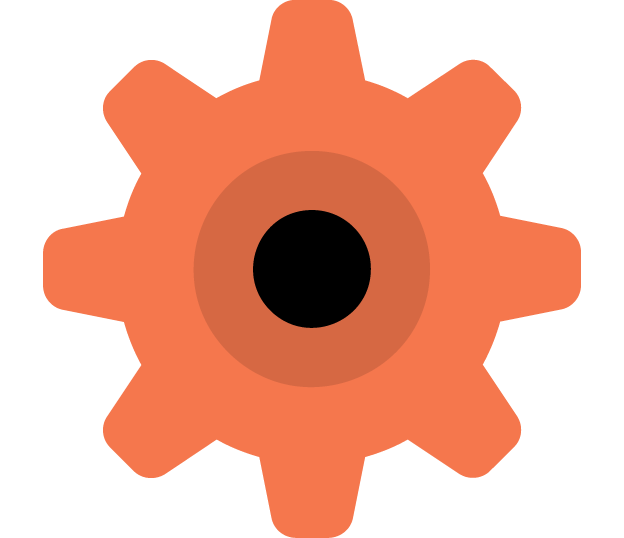
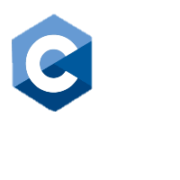

노후화된 자사 영상 시스템을 최신 IG 버전 기준으로 개조하고, 설정/지형/등화/UI/제어 프로그램 호환 문제를 처리.
2021 - 2023 / C++ / GenesisIG / MFC
영상 시스템 교체·개선 사업
GenesisIG 기반 노후 영상 시스템 개선 사업과 UH-60 영상 시스템 교체 사업. IG 설정 호환, MFC 제어 프로그램 개선, HOST 연동, 요구사항 분석, 업무 분배, 납품 대응을 맡은 파트장 시기 핵심 작업.
역할 영상 파트 선임, 파트장
범위 IG 기능 · MFC 제어 프로그램 · HOST 연동
관리 요구사항 분석 · 개발 항목 추출 · 업무 분배
타 업체 시뮬레이터의 영상 시스템을 자사 영상 시스템으로 교체. HOST 연동 모듈, 자체 IG 테스트 프로그램, 요구사항 기능 개발을 담당.
GitLab 기반 버전 관리, 기능 브랜치 운영, Debug/덤프 분석/멀티스레드 개선 등 개발 품질을 높이는 작업을 병행.
사용 기술과 도구
C++, GenesisIG, 지형/항공사진/SHP 및 모델 편집 도구



Global Mapper는 지형/항공사진/SHP 데이터 확인 및 편집에 사용, Presagis Creator는 FLT 모델 편집과 애니메이션 작업에 사용
프로젝트 구분
01 / 개선 사업
영상 시스템 개선 사업
노후화된 자회사 영상 시스템을 최신 IG 버전 기준으로 업그레이드 후 교체한 사업. 기존 설정과 데이터, 제어 프로그램을 유지하면서 새로운 IG 버전에 맞게 호환시키는 작업이 중심.
기간2021.08 - 2022.01
참여영상 파트 3명, 총 약 20명
역할최신 IG 기준 개조 작업
- IG 설정 파일 마이그레이션 및 개선
- 고도/지형 데이터 교체
- 공항 등화 개선
- OpenGL 기반 UI 프로그램 수정 및 개선
- MFC 기반 영상 시스템 제어 프로그램 수정
- GenesisIG 버전 변경에 따른 기능/설정 호환 확인
호환 처리
기존 영상 시스템의 설정과 데이터 구조를 유지하면서 최신 IG에서 동작하도록 설정 파일, 지형/항공사진, 공항 등화, UI 프로그램을 확인하고 수정.
제어 프로그램
MFC 기반 영상 시스템 제어 프로그램에서 통신 문제, 강제 종료, 프레임 드랍 문제를 분석하고, dump 확인과 로깅, 기능 활성/비활성 테스트로 문제 영역을 좁혀가며 수정.
02 / 교체 사업
UH-60 시뮬레이터 영상 시스템 교체 사업
타 업체 시뮬레이터의 영상 시스템을 자사 영상 시스템으로 교체한 사업. 파트장으로서 요구사항 분석, 개발 항목 추출, 업무 분배와 버전 관리, 설계 문서, 주요 기능 개발을 담당.
기간2022.10 - 2023.09
참여영상 파트 6명, 총 약 20명
역할파트장 / 주요 기능 개발

- 타 업체 HOST와의 연동 모듈 개발
- 자체 IG 기능 테스트 프로그램 개발: 자함 이동, 환경 변화, QTG 등
- 요구사항 항목 관련 IG 기능 연구와 적용
- 개발 항목 추출, 업무 분배, 버전 관리
- 설계 문서 작성
- GitLab/SourceTree 기반 브랜치 병합 및 작동 테스트
HOST 연동
타 업체 HOST와의 인터페이스 개발 문서를 기반으로 영상 시스템 연동 모듈을 개발하고, 메시지 송수신과 IG 기능 동작을 확인.
테스트 프로그램
자체 IG 기능을 검증하기 위한 테스트 프로그램을 제작해 자함 이동, 환경 변화, QTG 등 주요 항목을 반복 확인할 수 있게 구성.
품질 개선

개발 환경 Debug / DLL / 빌드 환경
코드 안정성 atomic / spinlock / PostMessage
개발 환경
Debug 모드 실행을 막던 구버전 CIGI DLL 문제를 해결해, 기존에는 어려웠던 디버그 기반 분석이 가능하도록 개선.
문제 분석
통신 문제, 강제 종료, 프레임 드랍 문제를 추적하기 위해 dump 파일, 로깅, 기능 활성/비활성 테스트로 재현 조건과 문제 영역을 확인.
멀티스레드
필요한 지점에 volatile/atomic을 적용하고, 짧고 자주 호출되는 임계 구역은 기존 CriticalSection 대신 spinlock 기반 lock guard로 교체. UI 스레드 갱신은 PostMessage 방식으로 분리.
IG 호환
구버전 IG에서 최신 IG로 교체하며 변경사항과 매뉴얼을 확인하고, 설정/데이터/기능 호환 문제를 해결.
파트장으로서 업무 진행
요구사항에서 납품 대응까지
- 요구사항 분석제안 요청서, 인터뷰, 요구사항 추적표를 확인해 영상 파트 개발 범위 파악
- 개발 항목 추출체계/SW 요구사항 명세서와 설계 기술서를 기준으로 작업 항목 정리
- 업무 분배와 버전 관리GitLab, SourceTree, 기능 브랜치, 병합 후 작동 테스트 기반으로 협업 진행
- 주요 기능 개발타 업체 HOST 연동 모듈, 자체 IG 테스트 프로그램, 요구사항 기반 IG 기능 개발